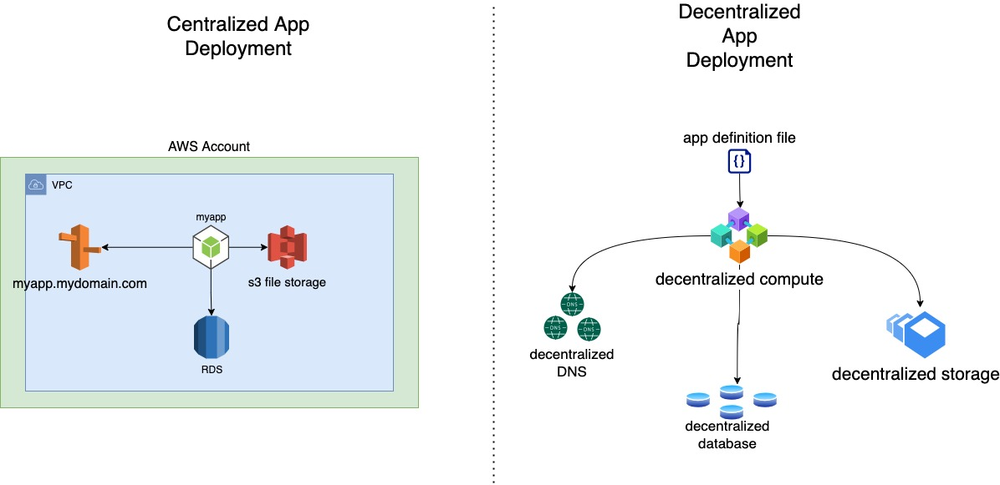
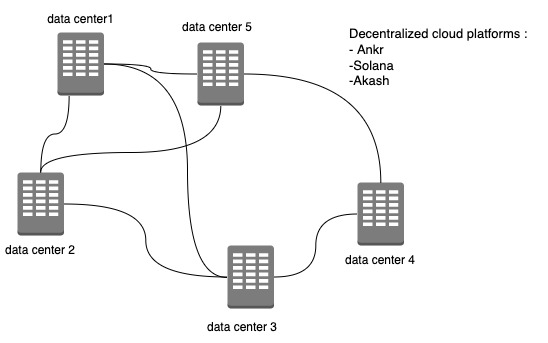
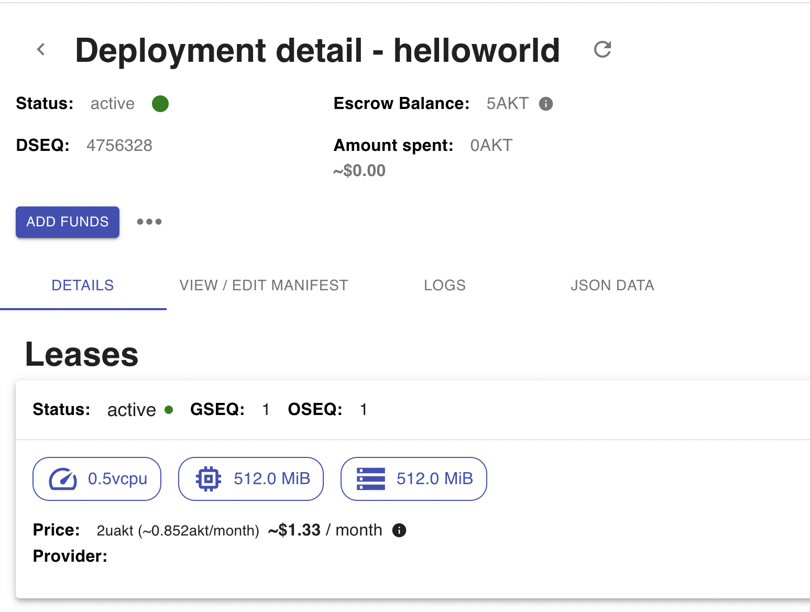

The whole concept of decentralized cloud was always interesting to me, after all, it’s fair to say today that the world of cloud is monopolized by the 3 big players: AWS, Azure, GCP, so a new approach to compute/storage based on blockchain technology is intriguing , and would make the cloud a more competitive destination rather than an exclusive big players club.
Another big driver for decentralization is the rapid expansion of web3 and DeFi apps, or DAOs ( decentralized Autonomous Organizations ), the growing interest from the public to have a more secure management of their personal data, and the skepticism from the control that “Big Tech” has over individuals information.
Because of its centralized nature the cloud as we know it today has its frailties, in the last 4 years AWS has had significant outages and impairments , which has resulted in entire internet services being interrupted from fortune500 companies to digital personal assistants and smart cat litters being offline.
Centralized vs Decentralized apps

Decentralized apps (dApps) is the new model of deploying/running apps designed for web3, unlike cloud native apps, that run in a data center, can be restricted geographically to a region/availability zone, but also logically deployed on a single cloud provider, dApps don’t have these constraints.
DApps have their backend code (smart contracts) running on a decentralized network and not a centralized server. They use blockchain for data storage and smart contracts for their app logic.
A smart contract is like a set of rules that live on-chain for all to see and run exactly according to those rules. Imagine a vending machine: if you supply it with enough funds and the right selection, you’ll get the item you want. And like vending machines, smart contracts can hold funds . This allows code to mediate agreements and transactions.
the idea behind decentralized cloud, is to leverage the underutilized cpu/storage capacity by being part of blockchain solution like : Ankr, Solana, or Akash , but in order to offer a viable alternative to the traditional centralized cloud a high degree of service availability, easy integration, and secure communication will be required.

Just like compute, storage, DNS, and database also have blockchain solutions like :
Storj : https://storj.io
Storj DCS is the world’s first open-source, decentralized cloud storage layer that’s private by design and secure by default – enabling developers to build in the best data protection and privacy into their applications as possible. The zero trust architecture, multi-region high availability, default encryption and edge-based access controls minimize risk and give only you, or those you grant permission to, access to your files. The result is that you take back full ownership and control of your data.
Hanshake : https://hsd-dev.org
Handshake is a UTXO-based blockchain protocol which manages the registration, renewal and transfer of DNS top-level domains (TLDs). Our naming protocol differs from its predecessors in that it has no concept of namespacing or subdomains at the consensus layer. Its purpose is not to replace DNS, but to replace the root zone file and the root servers.
BigchainDB: https://www.bigchaindb.com
BigchainDB allows developers and enterprise to deploy blockchain proof-of-concepts, platforms and applications with a BigchainDB is a blockchain database offering decentralization, immutability and native assets. BigchainDB allows for the deployment of large-scale applications in a variety of use cases and industries from intellectual property and identity to supply chain, and Internet-of-Things
My first Decentralized cloud app : Akash Networks
I looked at different platforms to POC an app deployment, I decided to give Akash Networks a try.
Akash is an open source Cloud platform that lets you quickly deploy a Docker container to the Cloud provider of your choice.
The Akash Marketplace is where users lease computing resources from Cloud providers before deploying a Docker container on the Akash Container Platform. The marketplace stores on-chain records of requests, bids, leases, and settlement payments using the Akash Token (AKT).
how to deploy an app on Akash Cloud :
using the their deployment platform Akashlytics Deploy
- Define your Docker image, CPU, Memory, and Storage in a deploy.yaml file.
- Set your price, receive bids from providers in seconds, and select the lowest price.
- Deploy your application without having to set up, configure, or manage servers.
- Scale your application from a single container to hundreds of deployments.

Akashlytics is a deployment platform that let you interact with the marketplace of datacenters willing to host the application, it will allow you to :
1 – Create the manifest file

2 – Placing the Bid

3 – Accept the offer

4- Deploy the app and create the lease

My thoughts :
I think it’s important to separate the hype from reality when it comes to the present of decentralized cloud, or dApps, while I think the idea of having an infrastructure that’s relies on other platforms than the big cloud players ( AWS/Azure/GPC ) is not only promising, but necessary, we should acknowledge that it’s in its early stages, lacking the stability, the reliability, and governance that both big and small businesses need.
One of the apparent advantage of using underutilized compute and storage across the glob is definitely driving cost down, Akash cloud for example is advertising prices that are 80% lower than those of public clouds :

having low compute prices can be a good incentive for adoption, it can be a good place for startups and companies with small cloud footprint/budget to start
Transparency is another aspect of decentralized cloud as you pay upfront ( with your digital wallet ) in coins for your monthly usage, you can avoid the “surprise fees” that you tend to find in your public cloud bill.
Finally, I’d say i’m excited that the idea of demonopolizing the cloud has started to gain momentum, let’s keep it going !